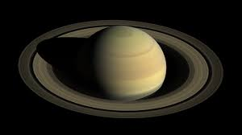

Back to home page
Saturn

Best known for its fabulous ring system, Saturn is the sixth planet from the Sun and the second largest in our solar system. Like Jupiter, Saturn is a gas giant and is composed of similar gasses including hydrogen, helium and methane.
Facts About Saturn
- Saturn has 150 natural satellites and smaller moonlets
- Saturn has the most extensive rings in the solar system
- Saturn orbits the Sun once every 29.4 Earth years
- Saturn is the flattest planet
- Saturn is the most distant planet that can be seen with the naked eye
- Four spacecraft have visited Saturn